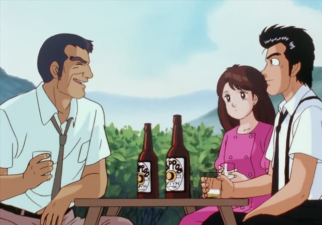
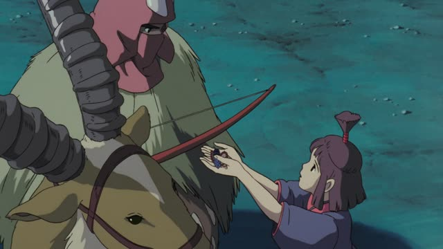

は
The Way of the Househusband · Episode 5
今は専業主夫です。
"These days I'm a full-time househusband."
は marks the topic: what the sentence is about. It goes right after a noun, and then you say something about it: 今 + は + 専業主夫です = "as for now: full-time househusband".
On this card, time words like 今 often get は. He used to be something very different.
Written は, said "wa".

Shirokuma Cafe · Season 1, Episode 5
それは剣道
"That [is] kendo."
On this card, it answers "What's that?": それは sets the topic, 剣道 is what gets said about it. In casual speech the だ at the end often gets dropped, as the [brackets] show.
Quick Examples
Meeting a new client. You introduce yourself.
私は山田です。
"As for me, I'm Yamada."
PoliteA friend asks if you're free this week.
今日は忙しい。明日は大丈夫。
"Today, I'm busy. Tomorrow, I'm fine."
CasualAt dinner, someone offers you meat and fish.
魚は食べます。
"Fish, I do eat." (meat, maybe not)
PoliteWith and without
魚、食べる。
"I eat fish." Plain and casual.
魚は食べる。
"Fish, I eat." Hints there's something else you don't.
Examples from Media
Porco Rosso
説得力はありますね。
"Well, it's convincing."
は on 説得力 (persuasiveness): "as for being convincing, it is". It hints "even if nothing else".

Oishinbo · Episode 38
僕は会いたくないと言ったはずです。
"I'm sure I said I didn't want to meet him."
僕は: the topic is me. はず = "I'm sure".

YouTube · video
醤油の量はお好みです。
"How much soy sauce is up to you."
As for the amount of soy sauce... は sets the topic, then comes the comment: your choice.

Princess Mononoke
おしおきは受けます。
"I'll accept the punishment."
は puts the punishment up front: "as for punishment, I'll take it".

Shirokuma Cafe · Season 1, Episode 10
趣味はアザラシの捕獲。
"[His] hobby is catching seals."
趣味 ("hobby") + は: as for his hobby... アザラシの捕獲 ("catching seals"). Casual, so no です at the end.

YouTube · video
水道代は0円
"Water bill: zero yen."
As for the water bill... zero. A short caption, no です needed.

New Atashin'chi · Episode 1
こういう時は強気でいかなきゃね。
"At times like this, you've got to be bold."
は can set a situation as the topic too, not just a person or thing: as for times like this...
Good Morning Call · Episode 1
私は無理。
"Not me, I can't."
Further Reading
A Dictionary of Basic Japanese Grammar
Entry "wa¹" (は) · pp. 516–519
Tae Kim's Guide to Japanese Grammar
Introduction to Particles · The 「は」 topic particle